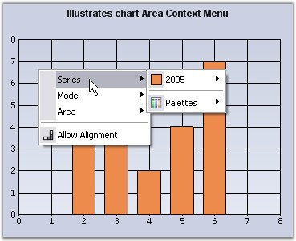
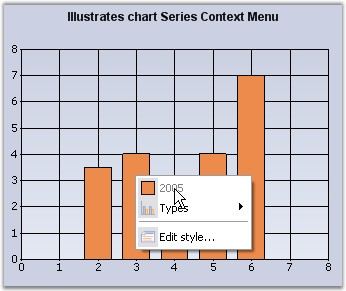
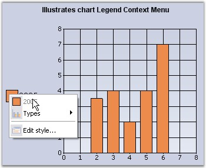

Chart Area and Series Context menu
The chart has a built-in context menu, which can be enabled by setting the ShowContextMenu property to true. This context menu will let the user change the chart type on a series, enable zooming, switch between 2D and 3D modes and so on.
There are two types of context menus, both of which get shown by default when the above property is set to true.
1. Chart Area context menu - This will be displayed when the mouse is over the chart area.

Figure 301: Chart Area Context Menu
This context menu can be disabled by setting the DisplayChartContextMenu property to false.
2. Chart Series context menu - This will be displayed when the mouse is over a series.

Figure 302: Chart Series Context Menu
This context menu can be disabled by setting the DisplaySeriesContextMenu property to false.
Legend Context Menu
This context menu can be enabled by setting the ShowContextMenuInLegend property to true.

Figure 303: Legend Context Menu